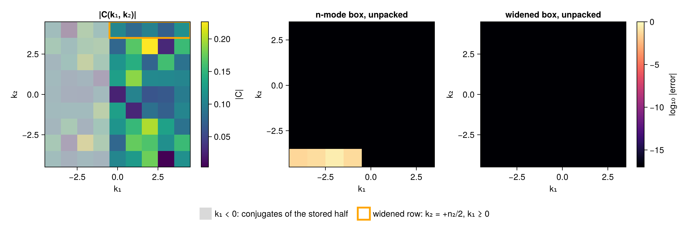

Packed layout
A real field's spectrum is conjugate symmetric, C(-k) = conj(C(k)), so a transform of a real field stores axis 1 halved, k₁ = 0, …, ⌊n₁/2⌋, and every other axis whole in FFT order. The axes are RFFTAxis (halved) and FFTAxis (full): vectors of the wavenumbers k = m dk, computed from the index, with dk = 2π/L. A complex field's transform is full on every axis.
using FlowTransformBindings: FlowTransformBindings as FTB
ks = FTB.wavenumber_axes(Float64, (2π, 4π), (8, 6))
ks, FTB.spectral_size(ks), collect(ks[2])((RFFTAxis(n=8, dk=1.0), FFTAxis(n=6, dk=0.5)), (5, 6), [0.0, 0.5, 1.0, -1.5, -1.0, -0.5])Sums over the full spectrum
A sum over the full spectrum of a function even under k ↦ -k (an energy |C|², a transfer Re{conj(û)·N̂}) is the sum over the stored modes weighted by mode_fold: 2 on an interior row of the halved axis, 1 on its k₁ = 0 row and, for even n₁, its Nyquist row, and 1 everywhere on a full layout.
The Nyquist slot
On an even axis the slot of frequency n/2 also holds -n/2: it is its own image under k ↦ -k, on either layout (is_nyquist). The grid derivative of cos(n x / 2) vanishes at the samples, so derivative_wavenumber is zero there.
Widened axes
The conjugate partner of a stored mode (k₁, k₂) is (-k₁, -k₂). Where k₂ is the Nyquist slot of an even axis, -k₂ is the slot itself. On a grid sampled periodically e^{i(n/2)y} = e^{-i(n/2)y} at every sample, so the slot holds both. On a grid that is not, +n₂/2 and -n₂/2 are two modes, and the axis is widened (box_size) to the n₂ + 1 modes -n₂/2 … n₂/2 in FFT order, so that index negation reaches every partner and unpacked! completes the half exactly. A real field's transform computes the packed half of its n-mode box, B, and conjugate symmetry gives its mirror -B; with two widened axes d ≥ 2 the modes of the widened box in neither, +n₂/2 with -n₃/2 and -n₂/2 with +n₃/2, hold zero (outside_modes).
On a grid stretched along y, the half over the widened box reproduces the full spectrum. The half over the n-mode box, unpacked by index negation, is wrong on the row k₂ = -n₂/2 for k₁ < 0:
using CairoMakie: CairoMakie as Mke
using Random: Random
Random.seed!(3)
n1, n2 = 8, 8
x = 2π .* (0:(n1 - 1)) ./ n1
y = 2π .* ((0:(n2 - 1)) ./ n2) .^ 1.3 # stretched: not a periodic sampling
X = [xi for xi in x, yj in y]
Y = [yj for xi in x, yj in y]
f = randn(n1, n2)
M = n1 * n2
C(k1, k2) = sum(f .* cis.(-(k1 .* X .+ k2 .* Y))) / M
freqs(n) = [FTB.mode_frequency(FTB.FFTAxis(n, 1.0), i) for i in 1:n]
# The direct-sum half over the n-mode box and over the box with axis 2 widened.
ms = (n1, n2)
box = FTB.box_size(ms, (false, true))
narrow = [C(k1, k2) for k1 in 0:(n1 ÷ 2), k2 in freqs(n2)]
wide = [C(k1, k2) for k1 in 0:(n1 ÷ 2), k2 in freqs(box[2])]
centered(A, m) = circshift(A, (n1 ÷ 2, m ÷ 2)) # FFT order to increasing frequency
err(A, m) = log10.(max.(centered(abs.(A .- [C(k1, k2) for k1 in freqs(n1), k2 in freqs(m)]), m), 1e-17))
fig = Mke.Figure()
h1, h2 = n1 ÷ 2, n2 ÷ 2
kc = -h1:h1
ax1 = Mke.Axis(fig[1, 1]; title = "|C(k₁, k₂)|", xlabel = "k₁", ylabel = "k₂", width = 240, height = 240)
hm1 = Mke.heatmap!(ax1, kc, -h2:h2, [abs(C(k1, k2)) for k1 in kc, k2 in -h2:h2]; colormap = :viridis)
Mke.poly!(ax1, Mke.Rect2f(-h1 - 0.5, -h2 - 0.5, h1, n2 + 1); color = (:gray80, 0.75),
label = "k₁ < 0: conjugates of the stored half")
Mke.poly!(ax1, Mke.Rect2f(-0.5, h2 - 0.5, h1 + 1, 1); color = (:orange, 0.0), strokecolor = :orange,
strokewidth = 3, label = "widened row: k₂ = +n₂/2, k₁ ≥ 0")
Mke.Colorbar(fig[1, 2], hm1; label = "|C|")
Mke.Legend(fig[2, 1:5], ax1; orientation = :horizontal, framevisible = false)
panels = ((FTB.unpacked(narrow, ms), ms[2], "n-mode box, unpacked"),
(FTB.unpacked(wide, box), box[2], "widened box, unpacked"))
for (col, (A, m, title)) in enumerate(panels)
ax = Mke.Axis(fig[1, col + 2]; title, xlabel = "k₁", ylabel = "k₂", width = 240, height = 240)
hm = Mke.heatmap!(ax, -h1:(h1 - 1), (-(m ÷ 2)):((m - 1) ÷ 2), err(A, m); colormap = :magma,
colorrange = (-17, 0))
col == 2 && Mke.Colorbar(fig[1, 5], hm; label = "log₁₀ |error|")
end
Mke.resize_to_layout!(fig)
fig
Dealiasing and exact padding
A pseudospectral product of order fields reaches |m| ≤ order K from modes |m| ≤ K, and an n-point grid reads m as m - n round(m/n). dealias_cutoff is the largest K whose products alias outside [-K, K], ⌊(n - 1)/(order + 1)⌋: the 2/3 rule at order = 2. padded_length is the smallest grid M > (order + 1)(n ÷ 2) with M - n even, on which the product is exact on every mode, the Nyquist slot included; PaddedMaps moves coefficients between the two grids.
Reference
FlowTransformBindings.AbstractWavenumberAxis — Type
AbstractWavenumberAxis{T} <: AbstractVector{T}A wavenumber axis computed from the index: n, the box's mode count along the axis, and the spacing dk = 2π/L. Its type records the layout: RFFTAxis or FFTAxis.
FlowTransformBindings.RFFTAxis — Type
RFFTAxis(n, dk)The halved axis of an n-mode box: k_i = (i - 1) dk for i = 1 … n÷2 + 1. n is kept because the length does not determine it; it is odd on a widened axis (box_size).
FlowTransformBindings.FFTAxis — Type
FFTAxis(n, dk)The full axis of an n-mode box in FFT order: k_i = m dk, m = i - 1 for i ≤ ⌈n/2⌉, else i - 1 - n.
FlowTransformBindings.wavenumber_axes — Function
wavenumber_axes(T, Ls, ns) -> NTupleThe axes of an ns-mode box over periods Ls for a field of element type T, dk = 2π/L in the float type the periods promote to: axis 1 an RFFTAxis for real T and every other axis an FFTAxis.
FlowTransformBindings.full_length — Function
full_length(axis) -> IntThe box's mode count along the axis: n for a wavenumber axis, length for a plain vector.
FlowTransformBindings.full_size — Function
full_size(ks) -> NTupleThe box's mode counts, whatever the layout.
FlowTransformBindings.spectral_size — Function
spectral_size(ks) -> NTupleThe shape of one field's coefficients: full_size(ks) with axis 1 at n₁ ÷ 2 + 1 for a halved layout.
FlowTransformBindings.packed_size — Function
packed_size(T, ns) -> NTupleThe coefficient shape of a transform of full sizes ns for a field of element type T: axis 1 at n₁ ÷ 2 + 1 for real T, ns for complex T.
FlowTransformBindings.is_halved — Function
is_halved(axis) -> Bool
is_halved(ks) -> BoolWhether the axis, or axis 1 of ks, is a halved axis.
FlowTransformBindings.max_abs — Function
max_abs(axis) -> Realmaximum(abs, axis): (n ÷ 2) dk on a wavenumber axis, the same for the halved and full axis of a grid.
FlowTransformBindings.wavenumber_arrays — Function
wavenumber_arrays(proto, FT, ks; derivative = false) -> NTupleOne array per axis of ks, holding k_d (or derivative_wavenumber) along axis d and length 1 along the others, in proto's array type.
FlowTransformBindings.is_nyquist — Function
is_nyquist(axis, i) -> BoolWhether index i is the Nyquist slot of an even axis, frequency n/2, which is also -n/2: its own image under k ↦ -k, on either layout.
FlowTransformBindings.derivative_wavenumber — Function
derivative_wavenumber(axis, i) -> RealThe wavenumber a first derivative of a real field takes at index i: axis[i], and zero at the Nyquist slot, where cos(n x / 2) has zero derivative on the grid.
FlowTransformBindings.neg_index — Function
neg_index(axis, i) -> IntThe index of -k on a full axis: 1 ↦ 1, else n - i + 2. The Nyquist slot of an even axis maps to itself.
FlowTransformBindings.fold_weight — Function
fold_weight(axis, i) -> IntThe count of full-spectrum modes that stored index i stands for: 2 on an interior index of a halved axis, 1 at its k = 0 and Nyquist slots and everywhere on a full axis. A sum over the full spectrum of a function even under k ↦ -k equals the sum over the stored modes weighted by it.
FlowTransformBindings.mode_fold — Function
mode_fold(ks, I) -> Intfold_weight of mode I, read on axis 1. I may carry batch indices after the spectral ones.
FlowTransformBindings.fold_weights — Function
fold_weights(FT, ks) -> Array{FT}mode_fold along axis 1, shaped to broadcast against one field's coefficients: (length(ks[1]), 1, …) on a halved layout, a single one (1, 1, …) on a full layout.
FlowTransformBindings.box_size — Function
box_size(ms, distinct) -> NTupleThe extents of the coefficient box of an ms-mode transform: ms[d] + 1 where ms[d] is even and distinct[d] says the axis's samples tell +ms[d]/2 from -ms[d]/2 apart, ms[d] elsewhere.
FlowTransformBindings.outside_modes — Function
outside_modes(ms, box) -> Vector{Int}The linear indices, in a real field's packed half over the box box of an ms-mode transform (box_size), of the modes in neither B, the packed half of the ms-mode box, nor its mirror -B: +ms[d]/2 on one widened axis d ≥ 2 and -ms[e]/2 on another. Such a mode holds zero. With at most one widened axis d ≥ 2, as in two dimensions, there is none.
FlowTransformBindings.ovs_index — Function
ovs_index(kv, Ñ) -> IntThe index of integer frequency kv on an axis of length Ñ in FFT order, kv + 1 on a halved axis.
FlowTransformBindings.even_table_index — Function
even_table_index(kv, N, r2c) -> IntThe index of frequency kv in a table even in k sampled at the frequencies of an N-mode axis, such as the phis of oversampled_spectra: kv + 1 on a halved axis (r2c), and on a full axis its FFT order index, |kv| = N/2 at the Nyquist slot of an even N.
FlowTransformBindings.hermitian_request_size — Function
hermitian_request_size(ms) -> NTupleThe mode counts a transform produces so that every mode of a real field's packed half is present: one more on axis 1 at even n₁, which puts both ±n₁/2 on it.
FlowTransformBindings.publish_packed! — Function
publish_packed!(coeffs, fk, scale, ns, pms, ntrans, neg) -> coeffsThe packed half, scale times the leading pms[1] entries of each axis-1 run of the spectrum fk of size ns (see hermitian_request_size), conjugated when neg. A host loop; packed_half_view is the form a device broadcast reads.
FlowTransformBindings.packed_half_view — Function
packed_half_view(fk, ns, pms, ntrans) -> SubArrayThe packed half of the spectrum fk of size ns as a view: the leading pms[1] entries of axis 1, the other axes whole, the batch axis last.
FlowTransformBindings.unpacked! — Function
unpacked!(full, coeffs, ns) -> fullThe full FFT-order spectrum (ns…, batch…) of the packed half coeffs over the box ns, by C[k] = conj(C[-k]). On a widened axis (box_size) the negated index is a mode of the box; on an even axis its Nyquist slot is its own image, the one mode the samples hold at ±n/2. Broadcasts over strided views, so device arrays run it as kernels.
FlowTransformBindings.unpacked — Function
unpacked(coeffs, ns) -> fullunpacked! into a new array like coeffs.
FlowTransformBindings.dealias_cutoff — Function
dealias_cutoff(n, order = 2) -> Int
dealias_cutoff(axis, order = 2) -> IntThe largest |m| kept on an n-point axis for products of order factors, ⌊(n - 1)/(order + 1)⌋: the largest K with (order + 1) K < n, so a product of kept modes reaches |m| ≤ order K and its alias m ∓ n lies outside [-K, K]. order = 2 is the 2/3 rule (Orszag 1971).
FlowTransformBindings.is_dealiased — Function
is_dealiased(ks, I, order = 2) -> BoolWhether mode I lies beyond dealias_cutoff on any axis.
FlowTransformBindings.dealias_factors — Function
dealias_factors(proto, FT, ks, truncate; order = 2) -> NTupleOne array per axis, 1 on the modes dealias_cutoff keeps and 0 beyond, shaped to broadcast along its axis; their product is the keep mask. All ones when truncate is false.
FlowTransformBindings.padded_length — Function
padded_length(n, order = 2) -> IntThe padded length of an n-point axis for exact products of order factors: the smallest M > (order + 1)(n ÷ 2) with M - n even, so an alias m - M of a product mode falls outside [-n÷2, n÷2], the Nyquist slot included. order = 2 is the 3/2 rule.
FlowTransformBindings.padded_images — Function
padded_images(axis, i, M) -> NTupleThe indices of the M-point padded axis that index i embeds into: +n/2 and -n/2 for the Nyquist slot of an even full axis, one index otherwise, on the padded half for a halved axis.
FlowTransformBindings.padded_preimage — Function
padded_preimage(axis, p, M) -> IntThe index of axis that padded index p is an image of, or 0; the inverse of padded_images.
FlowTransformBindings.padded_axes — Function
padded_axes(ks, Ms) -> TupleThe axes of the padded grid Ms, with the spacing of ks and its layout.
FlowTransformBindings.padded_derivative_wavenumbers — Function
padded_derivative_wavenumbers(proto, FT, ks, Ms) -> NTuplewavenumber_arrays with derivative = true on the padded grid Ms, zero on the images of an even coarse axis's Nyquist slot, the derivative the coarse grid gives it.
FlowTransformBindings.PaddedMaps — Type
PaddedMaps(proto, FT, ks, Ms)Gathers between the coefficients of ks and those of the padded grid Ms, in proto's array type: padded_embed! writes each coefficient at its padded_images, halved once per Nyquist axis, and padded_truncate! returns each coefficient the sum of its images with the inverse weight, averaging a halved layout's even Nyquist plane with the conjugate of its mirror. truncate ∘ embed is the identity.
FlowTransformBindings.padded_embed! — Function
padded_embed!(dst, src, maps::PaddedMaps) -> dstThe coefficients src (ms…, C) at their padded images in dst (Msp…, C), zero elsewhere.
FlowTransformBindings.padded_truncate! — Function
padded_truncate!(dst, src, maps::PaddedMaps) -> dstThe padded coefficients src (Msp…, C) returned to the coefficients dst (ms…, C).